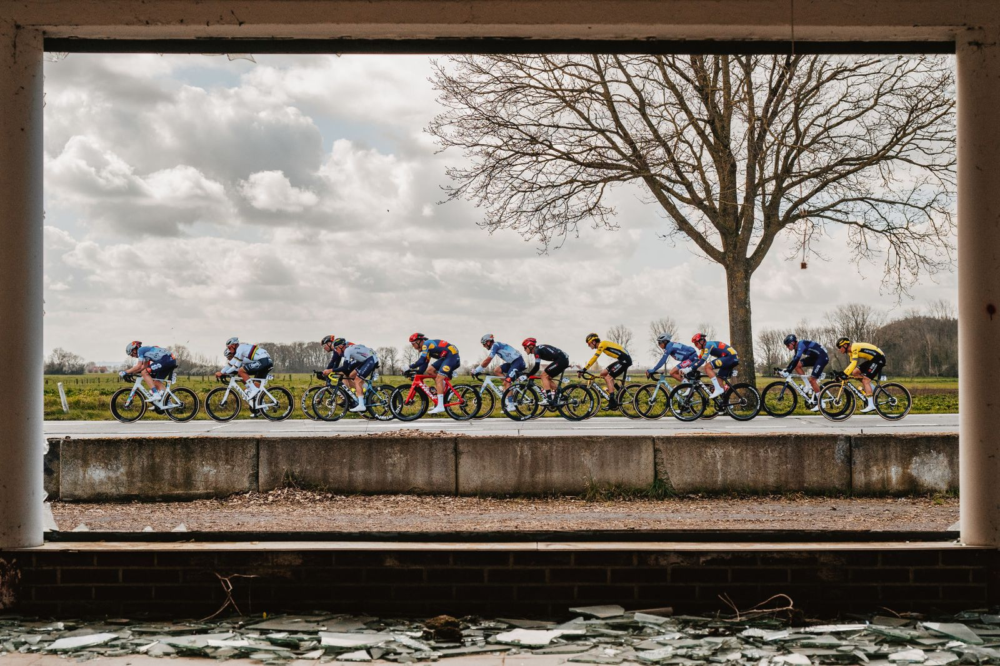
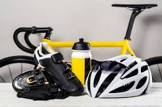
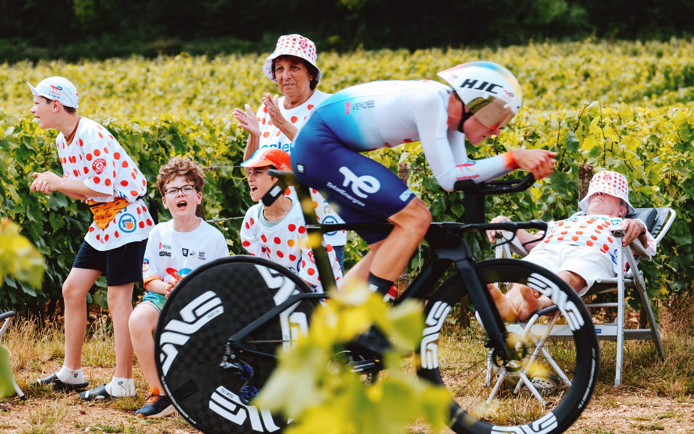

Meu Hobby: Andar de Bicicleta
Benefícios de Andar de Bicicleta
Andar de bicicleta não é só uma diversão, mas também traz diversos benefícios para a saúde e o meio ambiente. Aqui estão alguns deles:
- Saúde e Bem-estar: A bicicleta é uma excelente forma de exercitar o corpo, melhorando o condicionamento físico, tonificando os músculos e ajudando a reduzir o estresse.
- Sustentabilidade: Ao pedalar, você contribui para um mundo mais limpo e sustentável, reduzindo a emissão de poluentes e ajudando na preservação ambiental.
- Aventura e Liberdade: Andar de bicicleta permite explorar novos lugares, sejam eles urbanos ou naturais, proporcionando uma sensação única de liberdade.
- Socialização: Você pode se juntar a grupos de ciclismo, participar de passeios e eventos, fazendo novas amizades e se divertindo ainda mais.

Equipamento Necessário
Para começar a pedalar de forma segura e confortável, é importante ter alguns equipamentos básicos:
- Bicicleta: Escolha a bicicleta que melhor se adapta às suas necessidades, seja ela mountain bike, road bike ou híbrida.
- Capacete: A segurança vem em primeiro lugar. O capacete é fundamental para proteger sua cabeça em caso de quedas.
- Luz e Refletores: Caso pedale à noite ou em locais com pouca iluminação, a visibilidade é crucial, então invista em luzes e refletores.
- Roupas Confortáveis: Roupas adequadas para ciclismo podem ajudar a melhorar o conforto e a performance durante os passeios.

Como Começar
Se você está começando a andar de bicicleta, aqui vão algumas dicas para aproveitar ao máximo a experiência:
- Comece devagar: Se você for iniciante, comece com passeios curtos e vá aumentando a distância gradualmente.
- Verifique sua bicicleta: Antes de cada passeio, faça uma inspeção rápida nos pneus, freios e corrente da bicicleta.
- Hidratação e Alimentação: Leve água e lanches leves para passeios mais longos, principalmente em dias quentes.
- Respeite as Regras de Trânsito: Sempre pedale de maneira segura, respeitando os sinais de trânsito e sendo visível para motoristas.
